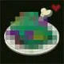
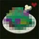
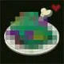

Once served in Hyrule Castle, the poultry (a whole bird!) used in this dish is of immensely high quality. The savory meat pairs well with the aroma of spice in this common curry.
"Made from several types of spices, this secret Goron seasoning has been handed down for generations. An initial wave of spiciness paves the way for sweetness."
Click the images below to see Link's other recipes!
